While there are many locations available to receive a colonoscopy screening there is no standard for price. Prices range from $655 in Salt Lake City to $8,577 in New York. While other screening methods are available the standard in the United States is a colonoscopy. In order to lower the number of Colon Cancer deaths there should be an affordable standard price for colonoscopy screenings. Another option for screening should also be more readily available. However, because Colonoscopies are already available in many areas, creating a lower standard price would be a good place to start.
